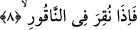

ve musîbetlere karşı sabır mertebelerinin tümünde sabrını “acaba başkaları ne der”
düşüncesinden soyutla, uzak kıl. Nitekim Allah; “Sabret! Senin sabrın da ancak
Allah’ın yardımı iledir.” (en-Nahl, 16/127) buyurmaktadır.
Kâşânî sûrenin başından buraya kadar olan âyetleri şöyle tefsir eder: “Ey beden
elbisesine bürünen ve onun sûretiyle perdelenen, bulunduğun durumdan ve tabîatın
işleriyle uğraşmaktan kalk ve gaflet uykusundan uyan, kendine gel, uyar. Yâni nefsini,
kuvvetlerini, senin dışındaki herkesi büyük bir azaptan uyar. “Sâdece Rabbini yücelt.”
Eğer herhangi bir şeyi yüceltip değerini tâzim edecek olursan Rabbini ta’zim et, sâdece
onu yücelt. Senin gözünde Rabbinden başka hiç kimse büyük olmasın, Rabbinin
dışındaki her şey kalbinde -Rabbinin kibriyâsını müşâhede ettiğin için- küçülsün.
“Elbiseni temiz tut.” Bâtınını /içini kötü huylardan, çirkin fiil ve kötü alışkanlıklardan,
azâba götüren heyûlânî kirlerden temizle! “Kötü şeyleri terket.” Yâni bâtınını maddî
levâhiktan, fasık ve cismânî biçimlerden, zulmâni ve heyûlânî karaltılardan uzak kıl.
“Yaptığın iyiliği çok görerek başa kakma.” Bütün bunlardan soyutlanırken malı bir
bedel beklentisiyle ve çok sevap alma ümidiyle verme. Çünkü bu nimeti vereni bir
tarafa bırakarak nimetle perdelenmedir ve çok büyük bir kusurdur. Tam tersine sırf
Allah rızası için ver. “Rabbın için sabret.” Yaptıklarını -başka hiçbir şey uğruna değil-
sâdece onun fazîletini elde etmek üzere sabrederek yap.
8. O Sûr’a üfürüldüğü zaman var ya,
“O Sûr’a üfürüldüğü zaman” Âyette yer alan “nâkûr” üflenilen şey demektir. Bundan
maksad sûrdur. Sûr İsrafil (a.s.)’ın kendisine iki kez üfleyecek olduğu boynuz
biçimindeki bir nesnedir. Buna ilk üflendiğinde her canlı ölecek, ikinci üflendiğinde
bütün canlılar dirilecektir. Kelimenin kökü olan “nakr” ses çıkarmak anlamınadır ve
asıl sesin çıkmasına sebeb olan “vurma” anlamını ifâde eder. Bir başka ifâdeyle bir
çeşit vurma sonucunda kendisinden ses çıkacaktır. Burada o vurmadan maksad
üfürmedir. Çünkü üfürme boğazdan çıkan havaya bir çeşit vurma işlemidir. Buna göre
âyetin mânâsı:”Sûr’a üfürüldüğü zaman” demek olur. Âyetin başındaki “fa”
sebebiyye/sebeb bildiren fâ’dır. Bir başka deyişle “fâ” harfinden sonrası yâni sûr’a
üfürülme “fâ” harfinden öncesine sebeb teşkil etmektedir, ama bunun aksı mümkün
değildir. Şu hâlde “fa” sebeb bildiren lâm mânâsınadır. Burada âdetâ şöyle denmiş
olmaktadır: Ey Muhammed! Sen onların aralarında bulunurken onların verecek oldukları
eziyetlerine sabret. Çünkü onların önlerinde korkunç bir gün var. Onlar o gün,
eziyetlerinin, sen de buna sabrının karşılığını göreceksiniz.